World 1
독립 판정 · 입력 조건·소스 해시 · 원본 로그


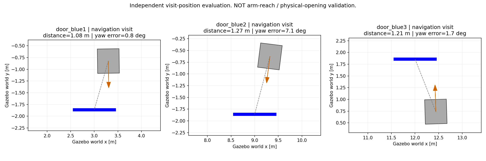
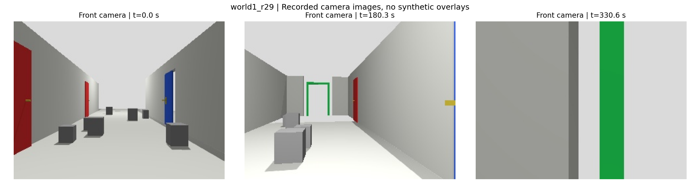
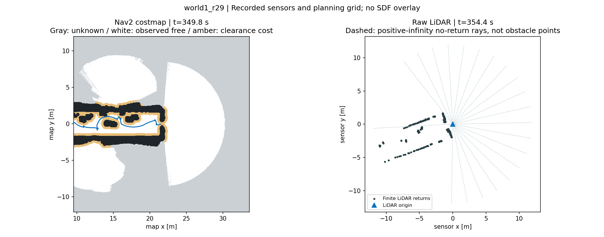

ALL_FIVE_PASS_NAVIGATION_ONLY · r29 · 동일 제어 소스: True
저장 지도, 사전 장애물·문 좌표, 문 개수를 제어에 전달하지 않음. 휠 오도메트리와 LiDAR로 지도를 만들고, 카메라 관측으로 문 후보를 기억·선택함. 월드의 문과 장애물 배치는 유지하고, 승인받은 출구만 초록 표식의 열린 통로로 구성함.
SLAM 지도는 시작 위치 기준의 map 좌표계, 배치·궤적 평가는 Gazebo world 좌표계임. 두 그림은 원점이 다르므로 좌표 숫자를 직접 비교하지 않음. 초기 지도는 첫 기록 시점까지 실제 스캔된 영역임.
주행 전용 검증. 파란문 방문·방향 정렬·중복 제외·비상구 통과를 확인함. 문 개방 서비스는 방문 완료를 반환하는 시험용 어댑터이며, 물리적 문 개방이나 로봇팔 도달 거리는 검증하지 않음.
| 월드 | 판정 | 유효 방문 / 평가상 파란문 | 실행 시간 |
|---|---|---|---|
| World 1 | PASS_NAV_VISITS_EXIT | 3/3 | 654 s |
| World 2 | PASS_NAV_VISITS_EXIT | 3/3 | 748 s |
| World 3 | PASS_NAV_VISITS_EXIT | 4/4 | 1363 s |
| World 4 | PASS_NAV_VISITS_EXIT | 0/0 | 1250 s |
| World 5 | PASS_NAV_VISITS_EXIT | 6/6 | 944 s |
판정 기준: 문 중심 진행축 오차 ≤0.70 m, 방문 거리 ≤1.60 m, 벽면 정면 방향 오차 ≤15°, 모든 파란문 중복 없이 방문, 실제 출구 통과, 기록된 위치에서 Nav2 외곽선과 장애물·벽·패널 겹침 없음. 접촉 센서 기반 충돌 검증은 아님. 실행 시간에는 시작·종료 정리 시간이 포함됨.
카메라 보정, 문 높이 기반 거리 보조 추정, 주행 여유 거리와 병합 허용오차 같은 일반 파라미터는 사용함. 반복 성공률·임의의 새 환경·실제 로봇 성능을 보증하지 않으며, 재접근과 부정확한 후보 제외에 따른 지연은 남아 있음.
위치추정 기록의 중단 간격은 전체 판정 JSON의 max_estimated_pose_gap_sim_sec에 별도 기록함. TF·관측 단절을 완전히 해소했다는 주장은 하지 않음. 운용 중 점검상 단절이 60초 이상 지속되면 검증을 중단함.
5개 월드 지도 생성 과정 · 5개 월드 평가 궤적 · 전체 판정 원본 · 이전 실행·실패 기록
독립 판정 · 입력 조건·소스 해시 · 원본 로그



독립 판정 · 입력 조건·소스 해시 · 원본 로그

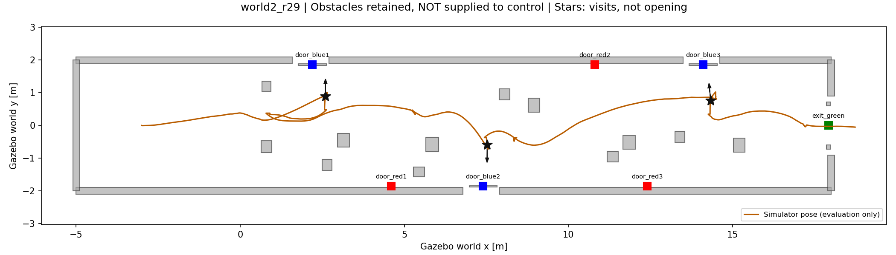


독립 판정 · 입력 조건·소스 해시 · 원본 로그
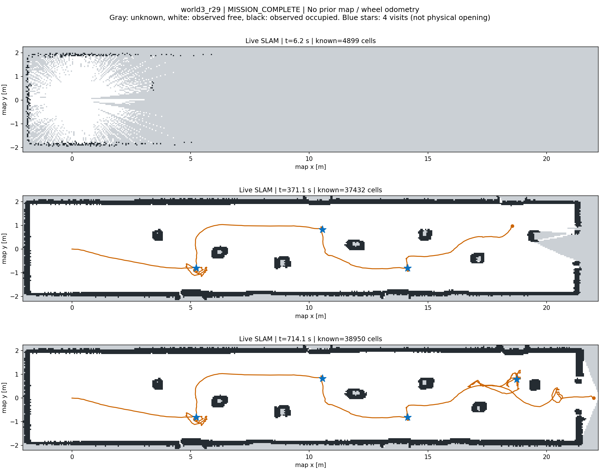
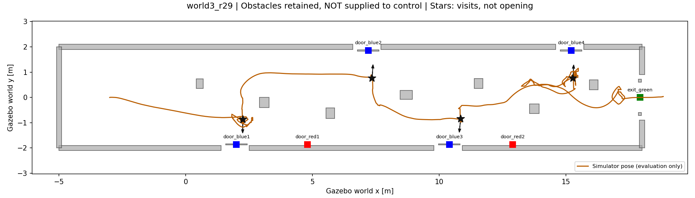


독립 판정 · 입력 조건·소스 해시 · 원본 로그
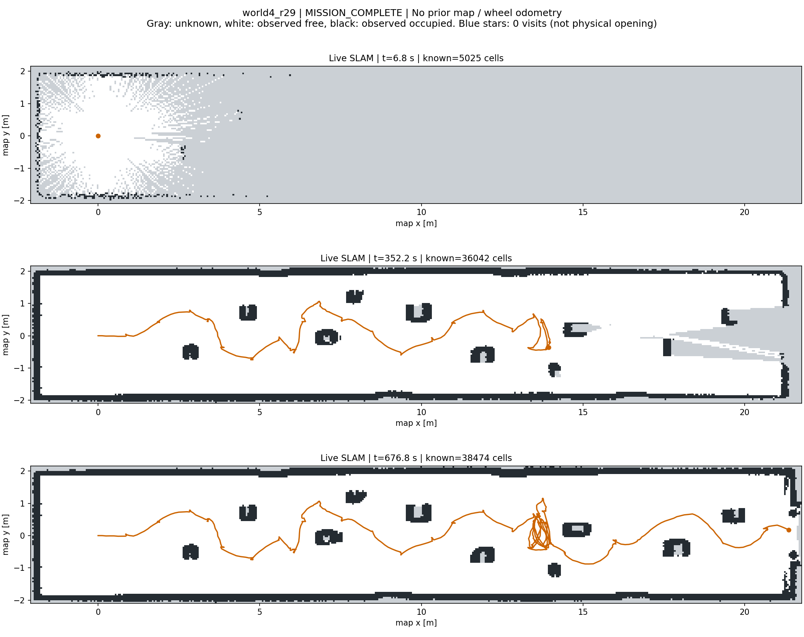
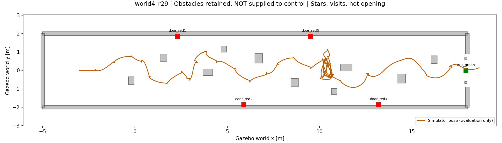
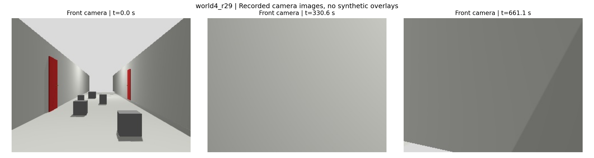
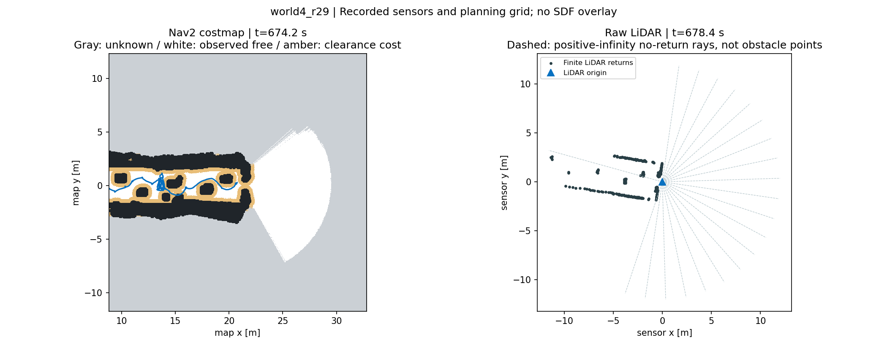

독립 판정 · 입력 조건·소스 해시 · 원본 로그


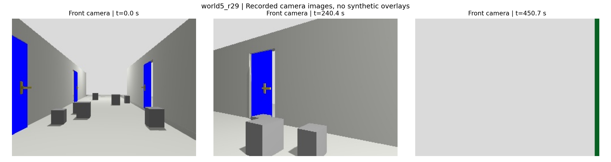

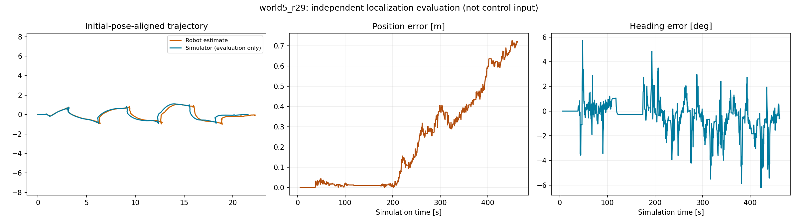